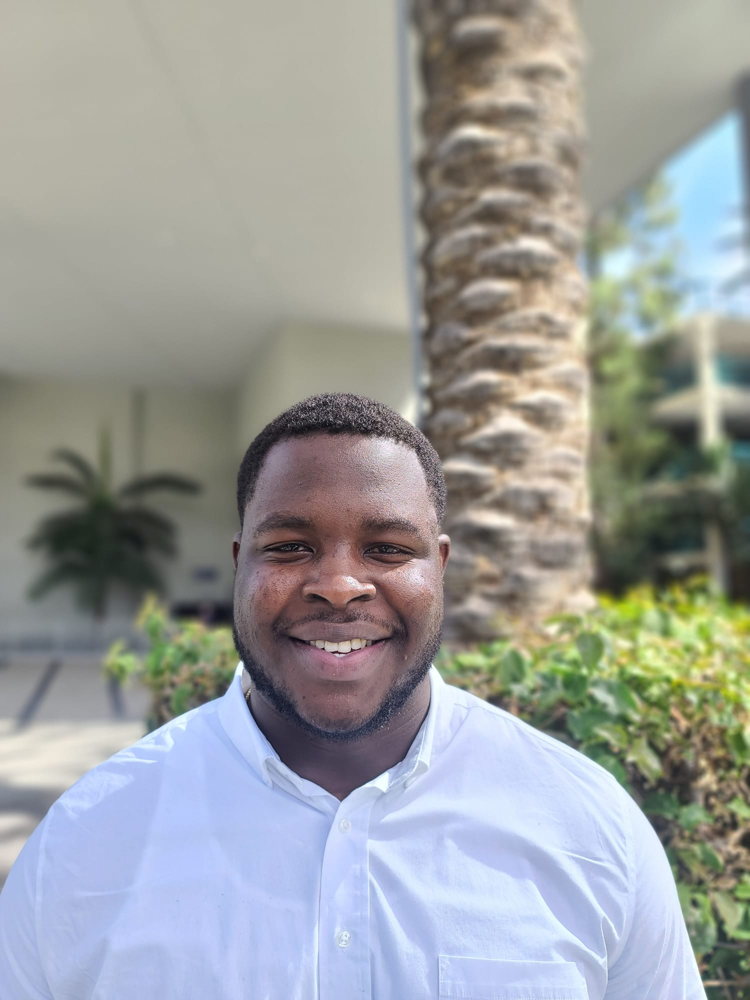

DANIEL OMOLE

Summary
Motivated computer science graduate with a focus on software development and a strong desire to contribute to innovative projects
EDUCATION
- Bachelor of Science, Computer Science - Northwest Missouri State University(2020-2023)
Work Experience
- Machine Learning Teaching Assistant - Northwest Missouri State University
August 2023 - December 2023
- Assist in-class lectures and procor exams for the assigned course
- Conduct laboratory help sessions outside of class time.
- Tutor individual students in machine learning concepts.
- Prepare assignment solutions written in python and participate in grading.
- Admissions Office Assistant - Northwest Missouri State University
November 2020 - December 2023
- Aid students and parents regarding university admissions.
- Organized and maintain important documents, especially student transcripts.
- work with diverse population on and off campus premises to organize admission events.
- Student Mathematics Tutor - Bolson College
April 2018 - August 2019.
- Helped ~20 students improve their critical thinking and problem-solving skills with a series of workshops
- Organized end of year events to honor students teachers
- Worked with diverse population on and off school premises to organize tutoring programs.
Skills
- Programming Languages: Python, java, javascript, C, C#
- Web Development: HTML, CSS, Bootstrap
- Database: SQL, JDBC
- Operating Systems/Version Control: Linux, GitHub
- Frameworks: Flask, Node.js. Vue.js
- Other skills: Machine learning, software engineering principles, secure programming, problem solving, collaboration
Honors and Awards
- Cum laude in Computer Science - Northwest Missouir State University (December 2023)
- University scholar - Northwest Missouri State University (Spring 2020 - December 2023)
Others
© Daniel Omole. All rights reserved.